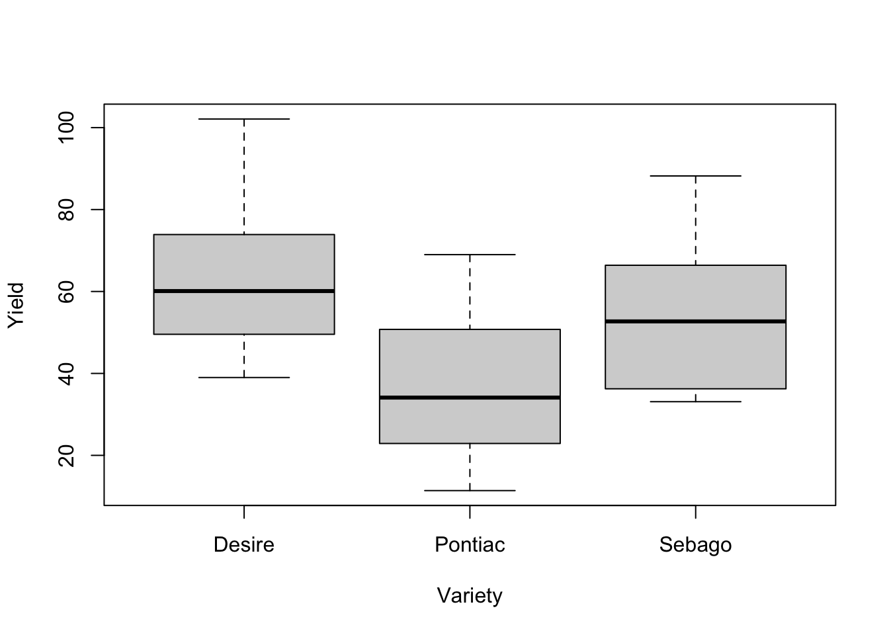
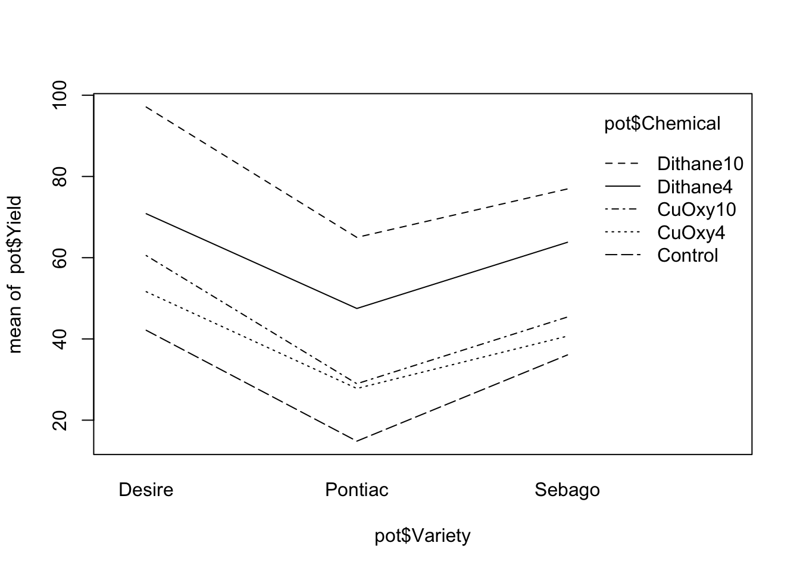
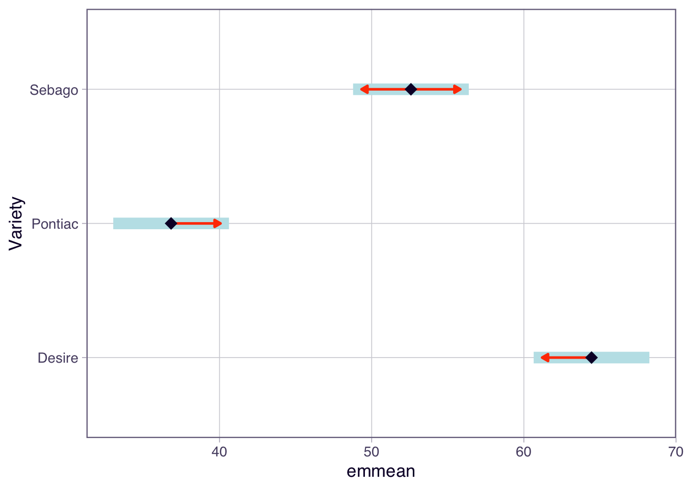
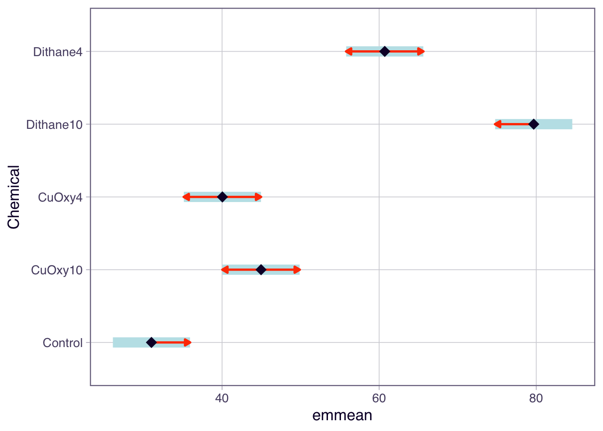

| term | command |
|---|---|
| 2-way factorial | A*B |
| 2-way interaction | A:B |
TipLearning outcomes
At the end of this practical students should be able to:
- use R to analyse experiments with a factorial treatment structure where the experimental design is a CRD or RCBD;
All of the data for this practical is in the Data6.xlsx file.
Exercise 1 - More Treatment Structures (Walk-through)
A microbiologist conducted an experiment to assess the survival of Salmonella typhinerium when subjected to various treatments. A factorial treatment design was used, the treatments being various combinations of sorbic acid, pH, and water activity. The density of Salmonella seven days after the treatment began was recorded. The Salmonella data is in the form:
log_{e}(density/ml), to 2 decimal places.
The data is found in the Salmonella sheet in the Data6.xlsx file.
There is a slight trick to analysing this experiment which will improve your ability to analyse factorial experiments in general.
The table below shows you how to specify the treatment structure and individual interaction term in a factorial design involving 2 factors, A and B.
Question 1.1
(i) Import the data into R and describe the data using numerical and graphical summaries. In particular does the exploratory data analysis (EDA) show any difference in S.typhinerium density between the levels of each of the treatment factors (a) sorbic acid (b) pH (c) water activity? Is there evidence of an interaction using interaction plots. No need to look at marginal means as the interaction plots summarise these.
Tip
Some hints for the EDA are:
in many experiments we will have treatment factors which have a numerical value (as is the case here) but for ANOVA-type problems we are comparing the mean response between each value so we need to tell R the data type is a
factor. If we don’t, it will fit a regression model which is Topics 7-9. This will result in the wrong type of analysis.use the
tapplyfunction in conjunction with thesummaryfunction;boxplots for individual levels of a factor are likely to be the most informative as compared to numerical summaries they visually show the spread of the observations as well. Example R code is below.
boxplot(Density~pH,data=salm)- to create interaction plots use the
interaction.plotoremmipfunction. You will need one of these for each 2-way interaction in your model.
#Solution
library(readxl)
salm<-read_excel("data/Data6.xlsx",sheet="Salmonella")
str(salm)tibble [45 × 4] (S3: tbl_df/tbl/data.frame)
$ Sorbic.Acid: num [1:45] 0 0 0 100 100 100 200 200 200 0 ...
$ pH : num [1:45] 5 5.5 6 5 5.5 6 5 5.5 6 5 ...
$ Activity : num [1:45] 0.78 0.78 0.78 0.78 0.78 0.78 0.78 0.78 0.78 0.82 ...
$ Density : num [1:45] 4.2 4.34 4.31 4.18 4.39 4.13 4.15 4.12 3.93 4.52 ...salm$Sorbic.Acid<-as.factor(salm$Sorbic.Acid)
salm$pH<-as.factor(salm$pH)
salm$Activity<-as.factor(salm$Activity)
str(salm)tibble [45 × 4] (S3: tbl_df/tbl/data.frame)
$ Sorbic.Acid: Factor w/ 3 levels "0","100","200": 1 1 1 2 2 2 3 3 3 1 ...
$ pH : Factor w/ 3 levels "5","5.5","6": 1 2 3 1 2 3 1 2 3 1 ...
$ Activity : Factor w/ 5 levels "0.78","0.82",..: 1 1 1 1 1 1 1 1 1 2 ...
$ Density : num [1:45] 4.2 4.34 4.31 4.18 4.39 4.13 4.15 4.12 3.93 4.52 ...First we calculate summary statistics for different levels of each treatment factor.
tapply(salm$Density,salm$Sorbic.Acid,summary)$`0`
Min. 1st Qu. Median Mean 3rd Qu. Max.
4.200 4.430 5.060 5.303 6.060 6.700
$`100`
Min. 1st Qu. Median Mean 3rd Qu. Max.
4.130 4.290 4.850 4.999 5.530 6.520
$`200`
Min. 1st Qu. Median Mean 3rd Qu. Max.
3.930 4.265 4.410 4.891 5.315 6.430 tapply(salm$Density,salm$pH,summary)$`5`
Min. 1st Qu. Median Mean 3rd Qu. Max.
4.150 4.245 4.790 5.082 5.960 6.510
$`5.5`
Min. 1st Qu. Median Mean 3rd Qu. Max.
4.120 4.365 4.950 5.066 5.665 6.700
$`6`
Min. 1st Qu. Median Mean 3rd Qu. Max.
3.930 4.300 4.850 5.045 5.535 6.650 tapply(salm$Density,salm$Activity,summary)$`0.78`
Min. 1st Qu. Median Mean 3rd Qu. Max.
3.930 4.130 4.180 4.194 4.310 4.390
$`0.82`
Min. 1st Qu. Median Mean 3rd Qu. Max.
4.180 4.270 4.310 4.387 4.430 4.850
$`0.86`
Min. 1st Qu. Median Mean 3rd Qu. Max.
4.29 4.41 4.85 4.79 5.01 5.35
$`0.9`
Min. 1st Qu. Median Mean 3rd Qu. Max.
5.010 5.200 5.430 5.532 5.870 6.140
$`0.94`
Min. 1st Qu. Median Mean 3rd Qu. Max.
6.180 6.250 6.430 6.418 6.520 6.700 There are a lot of statistics to examine which is where graphical summaries are easier to interpret.
The boxplots for each level of Sorbic.Acid show that Density decreases as the Sorbic.Acid increases, this is based off the median values. However it should be noted the distributions at each level do overlap each other which may indicate no significant differences.
boxplot(Density~Sorbic.Acid,data=salm,main=" ",xlab="Sorbic Acid",ylab="Density")
The boxplots for each level of pH show that there is little difference in Density, this is based off the median values.
boxplot(Density~pH,data=salm,main=" ",xlab="pH",ylab="Density")
The boxplots for each level of Activity show that Density increases as the Activity increases quite markedly, this is based off the median values. Also note the distributions for each level in some cases do not overlap at all, for example 0.78 and 0.82 are quite distinct from 0.9 and 0.94.
boxplot(Density~Activity,data=salm,main=" ",xlab="Activity",ylab="Density")
There are three 2 factor interactions which we can explore with interaction plots. When interpreting the interaction plots we are looking for changes in the shape of the lines for different levels of the treatment factor shown in the inset.
interaction.plot(salm$Sorbic.Acid,salm$pH,salm$Density)
Or:
library(emmeans)Welcome to emmeans.
Caution: You lose important information if you filter this package's results.
See '? untidy'salm.aov.2<-aov(Density~Sorbic.Acid*pH*Activity-Sorbic.Acid:pH:Activity,data=salm)
emmip(salm.aov.2, pH ~ Sorbic.Acid, CIs = TRUE)
The pH and Sorbic.Acid interaction plot does not have parallel lines, the difference being when pH = 5. There may be an interaction here but formal hypothesis testing is needed to determine this.
interaction.plot(salm$Sorbic.Acid,salm$Activity,salm$Density)
#Or
emmip(salm.aov.2, Activity ~ Sorbic.Acid, CIs = TRUE)
The Activity and Sorbic.Acid interaction plot does have parallel lines so there is not likely to be an interaction. Note that the traces for different Activity levels are quite well separated in most cases which is further evidence of a treatment effect for Activity.
interaction.plot(salm$pH,salm$Activity,salm$Density)
#Or
emmip(salm.aov.2, Activity ~ pH, CIs = TRUE)
The Activity and pH interaction plot does have parallel lines so there is not likely to be an interaction. Note that the traces for different Activity levels are quite well separated in most cases which is further evidence of a treatment effect for Activity.
Question 1.2
(ii) Write out the model you are fitting in terms of main effects and interactions, words are fine. Note, that each of these will have an associated statistical hypotheses. Obtain an ANOVA for these data, including appropriate interaction terms in the model.
What do you notice in the ANOVA table when your run the full 3-way factorial ANOVA? Use the summary function to extract the ANOVA table.
Run the model again but only include the interactions involving two factors: do not include the three factor interaction term. Why are we not including the three factor interaction?
Tip
Look at the data in Excel and manually calculate the mean Density for when pH = 5.0, Activity = 0.78 and Sorbic.Acid = 0. How many observations were used to calculate the mean?
The model in words is:
#Solution
density = sorbic acid + pH + activity (main effects) +
sorbic acid:pH + sorbic acid:activity + activity:pH (2 factor interactions) +
sorbic acid:pH:activity (3 factor interaction)
We are not fitting the 3 factor interaction as there is no replication at that level. For every combination of the three factors (Sorbic.Acid, Activity and pH), there is only one observation, so if this is fitted there will be zero degrees of freedom; replication would be needed to fit a three-way interaction. Effectively, by not fitting a three factor interaction, this term, becomes the Residual term.
To illustrate compare the output from a model with and without the 3 factor interaction.
salm.aov<-aov(Density~Sorbic.Acid*pH*Activity,data=salm)
summary(salm.aov) Df Sum Sq Mean Sq
Sorbic.Acid 2 1.366 0.683
pH 2 0.011 0.005
Activity 4 30.077 7.519
Sorbic.Acid:pH 4 0.209 0.052
Sorbic.Acid:Activity 8 0.501 0.063
pH:Activity 8 0.452 0.056
Sorbic.Acid:pH:Activity 16 0.635 0.040salm.aov.2<-aov(Density~Sorbic.Acid*pH*Activity-Sorbic.Acid:pH:Activity,data=salm)
summary(salm.aov.2) Df Sum Sq Mean Sq F value Pr(>F)
Sorbic.Acid 2 1.366 0.683 17.196 0.000103 ***
pH 2 0.011 0.005 0.133 0.876834
Activity 4 30.077 7.519 189.367 2.96e-13 ***
Sorbic.Acid:pH 4 0.209 0.052 1.319 0.305270
Sorbic.Acid:Activity 8 0.501 0.063 1.578 0.208120
pH:Activity 8 0.452 0.056 1.422 0.260864
Residuals 16 0.635 0.040
---
Signif. codes: 0 '***' 0.001 '**' 0.01 '*' 0.05 '.' 0.1 ' ' 1Question 1.3
(iii) Test that the model assumptions have been met.
#Solution
The residual diagnostics show that the data is normally distributed, has constant variance and has no obvious outliers. The response has been log transformed so this is no surprise.
par(mfrow=c(2,2))
hist(rstandard(salm.aov.2))
plot(salm.aov.2$fitted.values,(rstandard(salm.aov.2)))
qqnorm(rstandard(salm.aov.2))
abline(0,1)
or
library(performance)
check_model(salm.aov.2)
Question 1.4
(iv) What are the significant effects in the model? For the significant effects we conduct post-hoc tests the Tukey’s Test to determine which pairs are significantly different. Write overall conclusions, in terms of the statistical hypothesis testing and in terms of the biological description of the experiment.
#Solution
The ANOVA shows that none of the 2 factor interactions are significant which means we can examine the main effects individually. The significant effects are pH and Sorbic.Acid with P-values less than 0.05.
summary(salm.aov.2) Df Sum Sq Mean Sq F value Pr(>F)
Sorbic.Acid 2 1.366 0.683 17.196 0.000103 ***
pH 2 0.011 0.005 0.133 0.876834
Activity 4 30.077 7.519 189.367 2.96e-13 ***
Sorbic.Acid:pH 4 0.209 0.052 1.319 0.305270
Sorbic.Acid:Activity 8 0.501 0.063 1.578 0.208120
pH:Activity 8 0.452 0.056 1.422 0.260864
Residuals 16 0.635 0.040
---
Signif. codes: 0 '***' 0.001 '**' 0.01 '*' 0.05 '.' 0.1 ' ' 1Tukey test for the significant effects is shown below.
emmeans(salm.aov.2, pairwise ~ Sorbic.Acid)NOTE: Results may be misleading due to involvement in interactions$emmeans
Sorbic.Acid emmean SE df lower.CL upper.CL
0 5.30 0.0515 16 5.19 5.41
100 5.00 0.0515 16 4.89 5.11
200 4.89 0.0515 16 4.78 5.00
Results are averaged over the levels of: pH, Activity
Confidence level used: 0.95
$contrasts
contrast estimate SE df t.ratio p.value
Sorbic.Acid0 - Sorbic.Acid100 0.304 0.0728 16 4.178 0.0019
Sorbic.Acid0 - Sorbic.Acid200 0.411 0.0728 16 5.653 0.0001
Sorbic.Acid100 - Sorbic.Acid200 0.107 0.0728 16 1.475 0.3285
Results are averaged over the levels of: pH, Activity
P value adjustment: tukey method for comparing a family of 3 estimates Increased concentrations of sorbic acid result in significant reductions in Salmonella levels. There was a far greater reduction in Salmonella when the the Sorbic.Acid was increased from 0 to 100, compared with 100 to 200, suggesting that a saturation effect may be occurring.
emmeans(salm.aov.2, pairwise ~ Activity)NOTE: Results may be misleading due to involvement in interactions$emmeans
Activity emmean SE df lower.CL upper.CL
0.78 4.19 0.0664 16 4.05 4.34
0.82 4.39 0.0664 16 4.25 4.53
0.86 4.79 0.0664 16 4.65 4.93
0.9 5.53 0.0664 16 5.39 5.67
0.94 6.42 0.0664 16 6.28 6.56
Results are averaged over the levels of: Sorbic.Acid, pH
Confidence level used: 0.95
$contrasts
contrast estimate SE df t.ratio p.value
Activity0.78 - Activity0.82 -0.192 0.0939 16 -2.046 0.2894
Activity0.78 - Activity0.86 -0.596 0.0939 16 -6.340 0.0001
Activity0.78 - Activity0.9 -1.338 0.0939 16 -14.241 <.0001
Activity0.78 - Activity0.94 -2.223 0.0939 16 -23.669 <.0001
Activity0.82 - Activity0.86 -0.403 0.0939 16 -4.294 0.0044
Activity0.82 - Activity0.9 -1.146 0.0939 16 -12.195 <.0001
Activity0.82 - Activity0.94 -2.031 0.0939 16 -21.622 <.0001
Activity0.86 - Activity0.9 -0.742 0.0939 16 -7.901 <.0001
Activity0.86 - Activity0.94 -1.628 0.0939 16 -17.329 <.0001
Activity0.9 - Activity0.94 -0.886 0.0939 16 -9.427 <.0001
Results are averaged over the levels of: Sorbic.Acid, pH
P value adjustment: tukey method for comparing a family of 5 estimates As the Activity increases, the log_{e}(Density) of Salmonella increases approximately exponentially, and based on the Tukey Test the increase is significant at each increase in water activity with the exception of between 0.78 and 0.82.
Exercise 2 - More practice
An experiment was performed to study the control of potato blight on potatoes. A factorial treatment structure was employed with 3 Varieties in combination with 5 Chemical treatments. The experiment was conducted using a randomised complete block design (RCBD) with three blocks. The response is yield of potatoes (lbs).
Provide graphical summaries of the data, analyse the experiment, conduct any post-hoc tests if the results are significant. The data is found in the Potato sheet in the Data6.xlsx file.
#Solution
First we read in the data and convert to factor if required.
library(readxl)
pot<-read_excel("data/Data6.xlsx",sheet="Potato")
str(pot)tibble [45 × 4] (S3: tbl_df/tbl/data.frame)
$ Yield : num [1:45] 34.1 76.3 72.2 51.9 42.9 62.1 66.3 39.1 75.1 41.7 ...
$ Block : num [1:45] 1 1 1 2 2 2 3 3 3 1 ...
$ Variety : chr [1:45] "Pontiac" "Sebago" "Sebago" "Desire" ...
$ Chemical: chr [1:45] "CuOxy4" "Dithane10" "Dithane4" "CuOxy4" ...pot$Block<-as.factor(pot$Block)
pot$Variety<-as.factor(pot$Variety)
pot$Chemical<-as.factor(pot$Chemical)
str(pot)tibble [45 × 4] (S3: tbl_df/tbl/data.frame)
$ Yield : num [1:45] 34.1 76.3 72.2 51.9 42.9 62.1 66.3 39.1 75.1 41.7 ...
$ Block : Factor w/ 3 levels "1","2","3": 1 1 1 2 2 2 3 3 3 1 ...
$ Variety : Factor w/ 3 levels "Desire","Pontiac",..: 2 3 3 1 3 2 3 3 1 2 ...
$ Chemical: Factor w/ 5 levels "Control","CuOxy10",..: 3 4 5 3 2 4 4 2 5 5 ...Graphical summaries for the main effects are easier to interpret than summary statistics.
The boxplots based on Variety show that Pontiac is the worst performing.
boxplot(Yield~Variety,data=pot,main=" ",xlab="Variety",ylab="Yield")
The boxplots for each level of Chemical show that Dithane10 results in the greatest yield.
boxplot(Yield~Chemical,data=pot,main=" ",xlab="Chemical",ylab="Yield")
The marginal means below show that applying no chemical (Control) to suppress potato blight results in the worse yields for all varieties. The combination of Desire and Dithane10 result in the greatest yield.
with(pot, tapply(Yield, list(Chemical=Chemical,Variety=Variety), mean) ) Variety
Chemical Desire Pontiac Sebago
Control 42.13333 14.83333 36.06667
CuOxy10 60.53333 28.96667 45.40000
CuOxy4 51.63333 27.80000 40.70000
Dithane10 97.10000 65.00000 76.93333
Dithane4 70.83333 47.50000 63.80000The interaction plot below shows the lines to be reasonably parallel so an interaction effect is unlikely.
interaction.plot(pot$Variety,pot$Chemical,pot$Yield)
The residual diagnostics show that the data is normally distributed, has constant variance and has no obvious outliers.
pot.aov<-aov(Yield~Block+Chemical*Variety,data=pot)
par(mfrow=c(2,2))
hist(rstandard(pot.aov))
plot(pot.aov$fitted.values,(rstandard(pot.aov)))
qqnorm(rstandard(pot.aov))
abline(0,1)
or
#library(performance)
check_model(pot.aov)
The ANOVA shows that interactions is not significant so we can examine the main effects individually. Both are significant with P-values less than 0.05.
summary(pot.aov) Df Sum Sq Mean Sq F value Pr(>F)
Block 2 111 55 1.071 0.356
Chemical 4 13251 3313 64.109 1.09e-13 ***
Variety 2 5762 2881 55.756 1.72e-10 ***
Chemical:Variety 8 259 32 0.628 0.748
Residuals 28 1447 52
---
Signif. codes: 0 '***' 0.001 '**' 0.01 '*' 0.05 '.' 0.1 ' ' 1Tukey Post-hoc tests on the main effects is shown below.
emmeans(pot.aov, pairwise ~ Variety)NOTE: Results may be misleading due to involvement in interactions$emmeans
Variety emmean SE df lower.CL upper.CL
Desire 64.4 1.86 28 60.6 68.2
Pontiac 36.8 1.86 28 33.0 40.6
Sebago 52.6 1.86 28 48.8 56.4
Results are averaged over the levels of: Block, Chemical
Confidence level used: 0.95
$contrasts
contrast estimate SE df t.ratio p.value
Desire - Pontiac 27.6 2.62 28 10.525 <.0001
Desire - Sebago 11.9 2.62 28 4.521 0.0003
Pontiac - Sebago -15.8 2.62 28 -6.004 <.0001
Results are averaged over the levels of: Block, Chemical
P value adjustment: tukey method for comparing a family of 3 estimates plot(emmeans(pot.aov, pairwise ~ Variety), comparisons = TRUE)NOTE: Results may be misleading due to involvement in interactions
emmeans(pot.aov, pairwise ~ Chemical)NOTE: Results may be misleading due to involvement in interactions$emmeans
Chemical emmean SE df lower.CL upper.CL
Control 31.0 2.4 28 26.1 35.9
CuOxy10 45.0 2.4 28 40.1 49.9
CuOxy4 40.0 2.4 28 35.1 45.0
Dithane10 79.7 2.4 28 74.8 84.6
Dithane4 60.7 2.4 28 55.8 65.6
Results are averaged over the levels of: Block, Variety
Confidence level used: 0.95
$contrasts
contrast estimate SE df t.ratio p.value
Control - CuOxy10 -13.96 3.39 28 -4.118 0.0026
Control - CuOxy4 -9.03 3.39 28 -2.666 0.0852
Control - Dithane10 -48.67 3.39 28 -14.362 <.0001
Control - Dithane4 -29.70 3.39 28 -8.765 <.0001
CuOxy10 - CuOxy4 4.92 3.39 28 1.453 0.6003
CuOxy10 - Dithane10 -34.71 3.39 28 -10.243 <.0001
CuOxy10 - Dithane4 -15.74 3.39 28 -4.646 0.0006
CuOxy4 - Dithane10 -39.63 3.39 28 -11.696 <.0001
CuOxy4 - Dithane4 -20.67 3.39 28 -6.099 <.0001
Dithane10 - Dithane4 18.97 3.39 28 5.597 0.0001
Results are averaged over the levels of: Block, Variety
P value adjustment: tukey method for comparing a family of 5 estimates plot(emmeans(pot.aov, pairwise ~ Chemical), comparisons = TRUE)NOTE: Results may be misleading due to involvement in interactions
The results are quite clean with one level resulting in significantly greater mean yield for both treatment factors; Desire for Variety and Dithane10 for Chemical. From this we would recommend the use of Desire and Dithane10 for maximise yield via supressing potato blight.